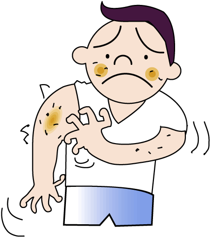

Methylparaben is used to preserve food and cosmetics. It is a fungicide and anti-bacterial agent, extending the shelf-life of a product. Methylparaben is quickly absorbed through the skin, and through the intestinal tract when used as a food preservative. There is a great deal of controversy surrounding its use, with many reports of dangerous side effects.
Methylparaben is widely used as a preservative in women's cosmetics, such as skin creams and deodorants. This compound has been found intact within breast cancer tissues. Some researchers suggest that methylparaben may increase risk of breast cancer, or accelerate the growth of these tumors.
In addition to digestive disorders, the use of Methylparaben in high doses can also cause respiratory tract disorders, such as causing sore throat, cough and difficulty breathing.
Skin treated with creams that contain methylparaben can be damaged with exposure to the sun's UVB rays. This oxidative stress (damage of the skin cells) is responsible for a number of disease processes, including cancer. Eye drops containing methylparaben, even in small amounts, can damage the lining of the eyes, as well as the cornea.
Use of Methylparaben in high doses can also cause disorders of the gastrointestinal tract such as increased stomach acid and gastric ulcers.
Parabens, including methylparaben, mimic the effects of estrogen in the human body. As a result, some researchers suggest that compounds containing parabens can cause decreased sperm production and motility.
In some people who are sentisif to Methylparaben can cause allergies. People with paraben allergies may develop dermatitis and skin irritation when they come into contact with the preservative.
